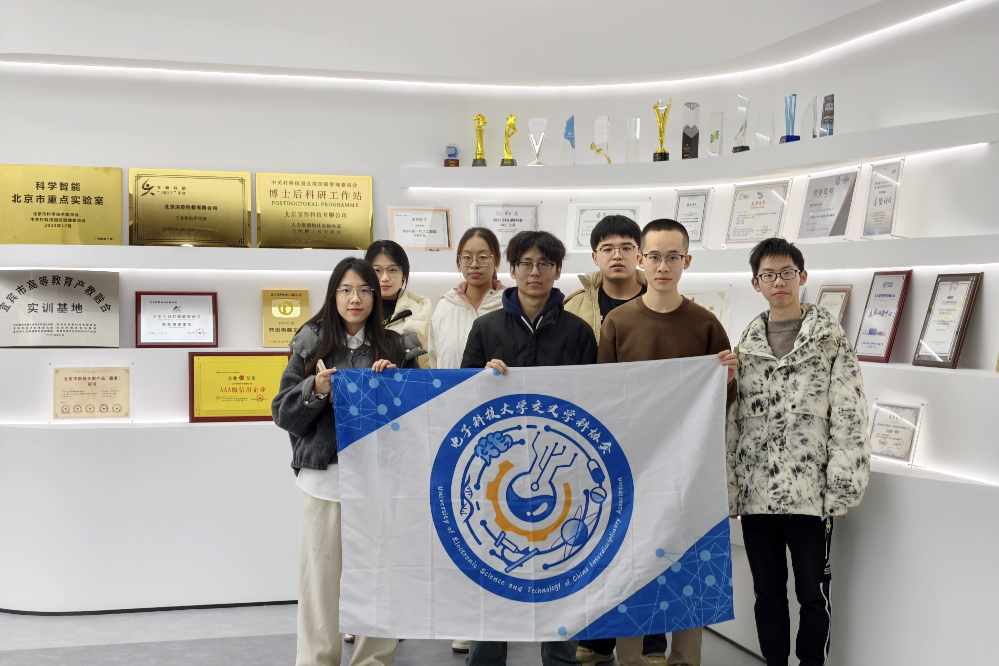
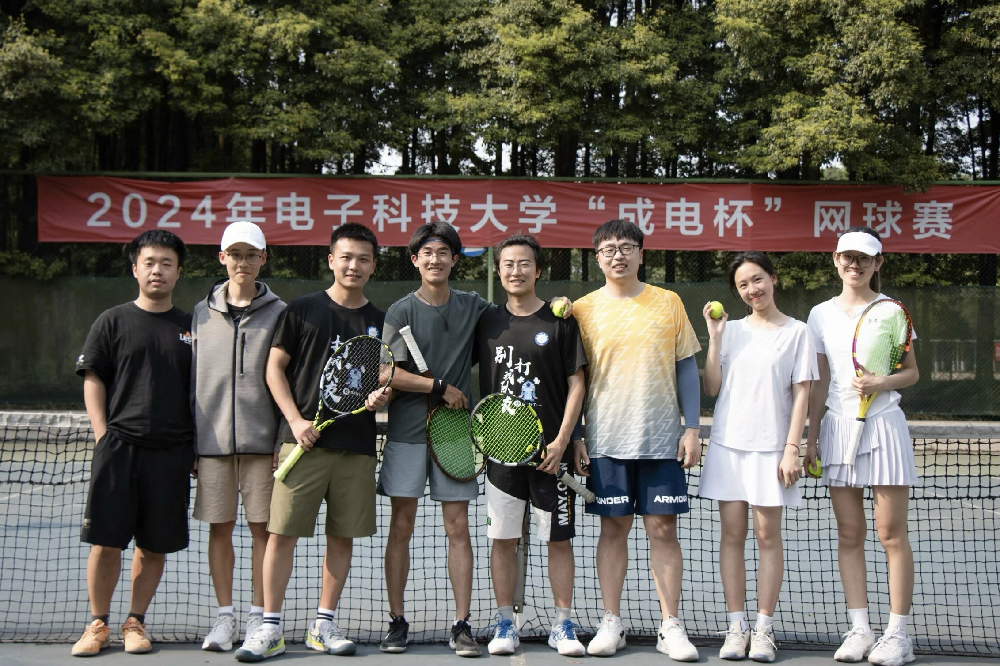
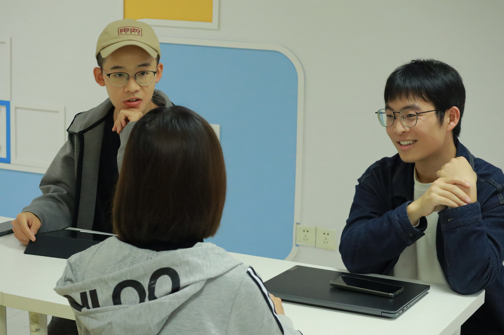

Hi, I'm Shine Yuan (张晰元) 👋
I am
Undergraduate — UESTC (2022.09 - 2026.06)
PhD — ZJU-UIUC (2026.09 - )
About Me
I am an undergraduate student majoring in Electronic Information Engineering at the University of Electronic Science and Technology of China (UESTC), and a winner of the UESTC Outstanding Student Nomination Award. I am planning to pursue a Ph.D. at the ZJU-UIUC Institute from 2026, under the supervision of Prof. Bruce Yu.
- 🏫 Education: UESTC, School of Information and Communication Engineering (2022.09 - Present)
- 🏆 Academic Performance: GPA 4.00/4.00
- 🔬 Current Position: Intern at AsiaInfo Technologies (2026.01 - Present)
- 🚀 Future Plan: Ph.D. candidate at ZJUI, Zhejiang University (From 2026.09), supervised by Prof. Xinbo Yu.
- 🌟 Honors: National Scholarship (2x) | UESTC Outstanding Student Nomination Award | The Scholarship of Gratitude to Modern Scientists in China (Top 10 university-wide) | "Liren Elite" Scholar (Top 5 university-wide)
Research Interests
- Multimodal Data / Sensor Fusion
- AI for Science (AI4S)
Leadership & Service

UESTC Interdisciplinary Association
Co-founder & Vice President
- Established a 170+ member interdisciplinary innovation ecosystem
- Established strategic partnerships with 8 industry leaders
- Invited Academician Pedro Valdes-Sosa and Prof. Dezhong Yao as advisors

UESTC Running Association / Tennis Association
Vice President / School Team Member
- National Championships — 10K competitor
- Provincial Games — 800m competitor
- Back-to-back Runner-up, UESTC Cup Tennis Tournament

Visual China / Content Creation
Contributor & Broadcaster
- Bilibili streamer — 840K+ total video views
- 20K+ likes & favorites across platforms

Peer Counselor
Peer mentoring & student guidance
- Speaker at "Chengdian Youth Talks" (成电青年说)
- Organized study-sharing events with audiences exceeding 10,000
Interests & Hobbies
🏃♂️ Long-distance Running🎾 Tennis📷 Photography📱 Content Creation